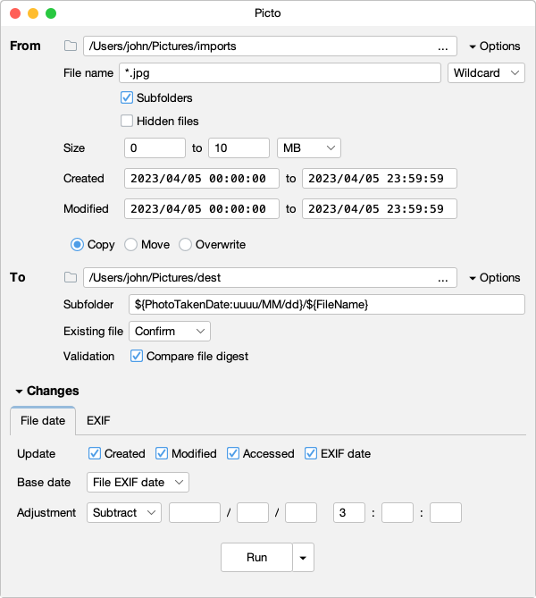

Picto
Picto is a desktop application for organizing photo files.

Copy or move photos to another folder
You can specify sub folders and file names freely at shooting date etc.
Change file date
Specified date and difference date can be set. It is effective when you forget to change the time zone of the camera.
- File creation date
- File modified date
- File access date
- Exif date
Remove Exif data
- GPS data
- All Exif data